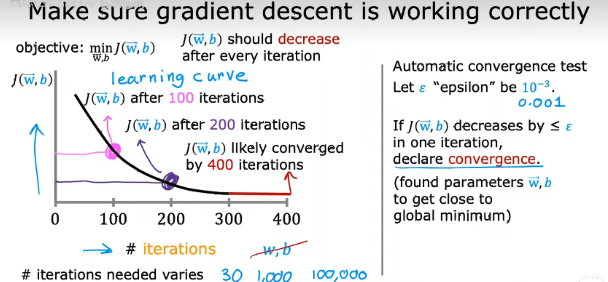
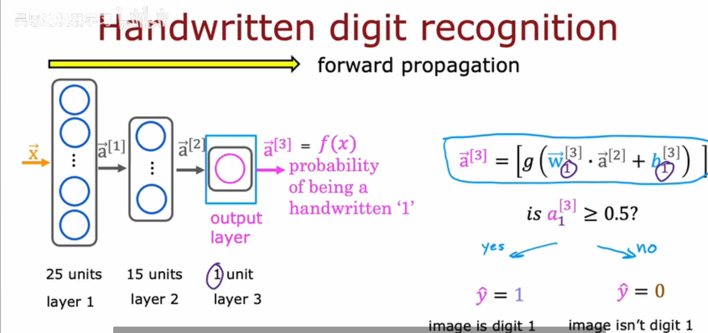
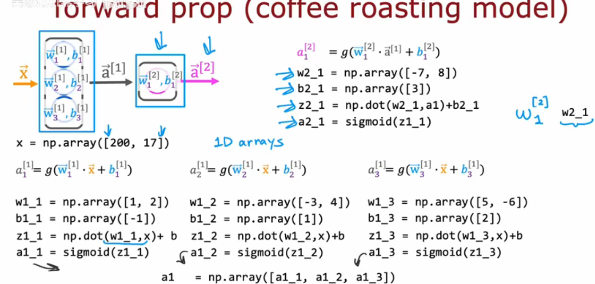
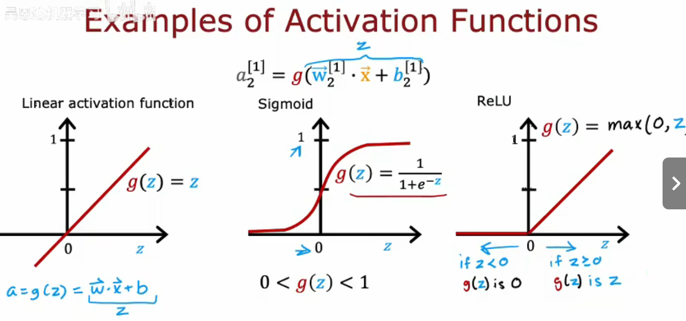
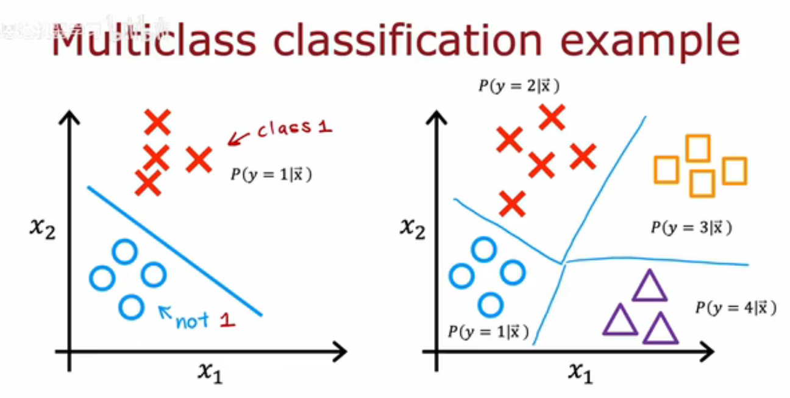
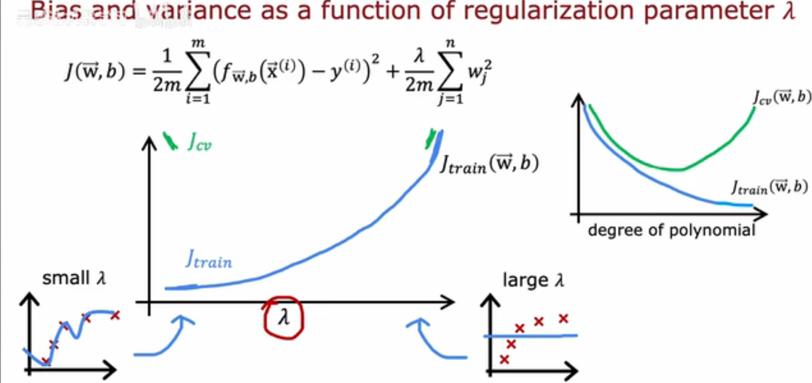
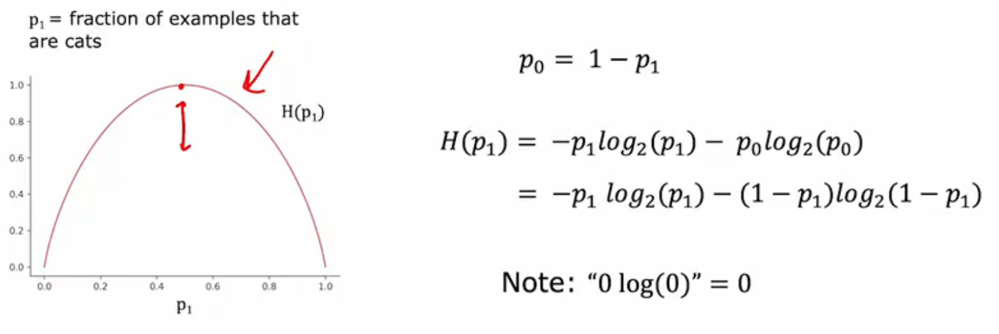

监督学习
回归算法：从可能的数字中预测算法，学习算法提供例子，xy映射
分类算法：拟合边界线，分辨哪个type
无监督学习
聚类算法：获取没有标签的数据并尝试自己将他们分组到集群中，只是分类 ···
监督学习和无监督学习的本质在于是否能给出正确答案给机器去参考
异常检测
J(x)衡量平方误差多大的成本函数，选择最小化平方误差的w，使尽可能小，求出取最小值时的w和b
梯度下降算法
α太小收敛慢，太大收敛不了
当接近局部最小梯度下降时，自动采取更小的步长，因为偏导变小
局部最小值不能保证全体最小值？
凸函数是碗形函数，只有单个全局最小值，所以在凸函数上实现梯度下降时，只要选择适当的学习率，总能收敛到全局最小值
Batch gradient descent批量梯度下降，每次更新时查看整个训练集
向量化：一次性处理，比循环快
特征值缩放
一个好的模型，特征值越小，参数越大，要尽可能使两者差别不大
- 除以最大值
- 归一化处理，包括mean和z-score
检验梯度下降是否收敛:图标or小于epsilon

学习率的选择：从小到大调整，先确保能找到最小梯度
构建分类算法
决策边界，左边预测为0，右边预测为11
逻辑回归模型
本质就是sigmoid的变形
代价函数
损失值其实指的是预测和实际之间的偏差，有点不懂loss该怎么翻译
简化版本
有个很好的凸性
梯度下降
线性回归和逻辑回归每次更新相同吗？形式上相同，但是每次代入的f不同
欠拟合
泛化：能推广，但不精
过拟合：也许不能推广所有
- 解决过拟合
选择最好的特征值
正则化：防止特征产生影响，减少参数影响
lamdba值决定了如何平衡，lamdba过大会欠拟合，过小会过拟合
正则化线性回归
正则化就是在每一次迭代中将w诚意一个稍微小于1的数字
正则化逻辑回归
过拟合风险很大，加上lambda一项
神经网络
activation：一个神经元向下游的其他神经元发送高输出的程度
layer: affordability,awareness,perceived quality
- 全连接神经网络
多隐藏层神经网络
- 图像识别
输入是一个很长的向量，包括二维转换为一维，第一层寻找边缘，第二层层寻找五官，第三层寻找面部形状
- 前向传播算法

- Tensorflow中的数据推理
x=np.array([200,17])
layer1=Dense(units=3,activations='sigmond')
a1=layer1(x)

- 神经网络向量化
- 矩阵乘法代码
- TensorFlow实现
1.指定模型，告诉TensorFlow如何进行推理计算
model=Sequential([Dense(units=25,activation='sigmoid')
Dense(unit=15,activation='sigmoid')
Dense(unit=1,activation='sigmoid')
]
2.使用特定的损失函数编译模型
使用平方还是绝对值
model.compile(loss=BinaryCrossentropy())
model.compile(loss=MeanSquaredError())
3.训练模型
model.fit(X,y,epochs=100)
- sigmoid函数的替代品

取决于预测标签Y是什么
在隐藏层更多使用ReLU因为速度更快
Dense(units=25,activation='relu')
- 为什么需要使用激活函数，或者为什么不直接使用线性函数？
hidden layer使用线性，output layer使用逻辑回归，结果是逻辑回归，如果都用线性函数，最终得到的也只是线性函数，不能得到更复杂的特性
多类
当要识别的不仅仅是0或1

- softmax回归算法
逻辑回归算法的推广
当n=2时，就是逻辑回归模型
损失函数
- 多标签分类
方法一：构建三个独立的神经网络
方法二：训练一个神经网络同时检测所有三种情况
- 优化方法
Adam算法:自动调整学习率
model.compile(optimizer=tf.keras.optimaizers.Adam(learning_rate=le-3),......)
- Additional Layer Types
Dense layer：每个层中的神经元都将前一层的所有激活作为输入
Convolutional Layer:每个神经元只能看到部分前一层的输入。好处：更快计算，更少训练数据导致更少的过拟合

模型评估
70%训练集：训练模型参数
30%测试集
- 如何解决低于泛化误差的实际估计
将数据集分为三个子集：60%训练集，20%测试集，20%交叉验证集：使用这个额外的数据集来交叉检查有效性
查看哪个模型有最低的交叉验证误差
诊断偏差和方差
High bias
Just right
High variance
lambda越大，wj越小，拟合效果越不好

- 建立表现标准
人类表现水平
是否有一些竞争算法
一要观察标准和训练误差差值（偏差），二要看训练误差和交叉验证误差差别（方差）
如果一个学习算法有高偏差，增加更多的训练数据本身也无法降低出错率
此时增加训练集可能会有帮助
- 解决高方差/偏差方法

高方差：获取更多训练数据或者简化模型（使用哦个更小的特征，增加正则化参数lambda）
高偏差：给模型更多灵活性，适应更复杂情况
Bigger network是指更多训练单元units
- 迁移学习
detect edges->corners->curves/basic shapes
- 决策树模型
1.如何选择哪个特征进行分割？
最大化纯度
2.什么时候停止划分？
达到某个阙值，或大于树的深度
- 测量纯度
使用熵函数
当熵值最小时，纯度最高，最大时，纯度最小
实际函数

- 选择拆分信息增益(熵的减少)
取左右平均的加权平均
H(0.5)-加权平均就是信息增益，如果熵的减少太小，低于一个阙值，就不再进行分裂
- 为什么使用热编码？
把特征转换为数值，超过两个离散值的特征值，热编码把这三类之间视作是平等的
- 回归树和决策树区别？
决策树用方差而不是熵函数
使用单个决策树缺点：对微小的变化高度敏感
神经网络更像是数学家的思路，决策树就像是程序员的思路
随机森林算法
每次放回抽样得到不一样的训练集，新的训练集训练出若干的决策树，并且最终的预测结果是基于森林的投票结果进行（每个节点特征随机化）
- 如何减少过拟合问题
从n个特征中选一个包含k个特征的子集
XGBoost算法
不是有放回的抽样，为不同训练样本分配不同权重
- 回归
from xgboost import XGBClassifier
model=XGBClassifier()
mdoel.fit(X_train,y_train)
y_pred=model.predict(X_test)
- 分类
from xgboost import XGBRegressor
model=XGBRegressor()
model.fit(X_train,y_train)
y_pred=model.predict(X_test)
无监督学习
在无监督学习下，得到的数据集只有x没有标签y
- Clustring聚类算法
- K-menas算法
选择两个簇，初步猜测簇质心的位置，遍历每个点，分配到离簇中心更近的位置
移动簇中心，到红点的中心位置
再次检查，重复上述过程，簇中心位置不断变化，直到收敛